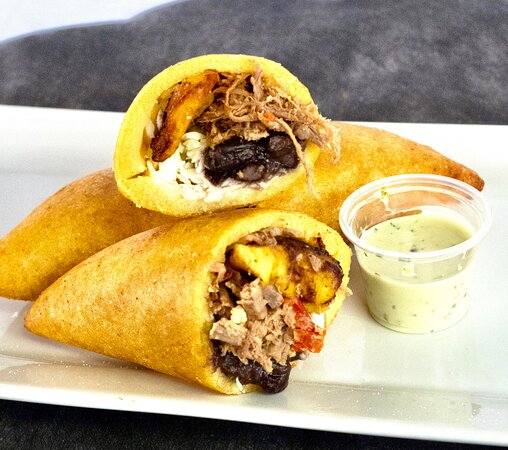

Empanada Veneka

Ingredients
For the dough
- 3 tablespoons sugar
- 1 1/2 tablespoons vegetable oil, plus more for greasing and frying
- 1 1/2 tablespoons unsalted butter
- 1 tablespoon salt
- 3 1/2 cups precooked cornmeal (such as P.A.N. brand)
- 1/4 cup plus 2 tablespoons all-purpose flour
For the filling
- 1 1/2 pounds beef blade roast, cut into 4 pieces, trimmed
- 4 bay leaves
- Kosher salt
- 2 tablespoons extra-virgin olive oil
- 1/2 medium onion, diced
- 1/4 green bell pepper, diced
- 2 cloves garlic, minced
- 1 shallot, diced
- 2 teaspoons paprika
- 2 teaspoons sazon completa (Spanish seasoning blend, found in the spice aisle)
- 1/4 teaspoon dried oregano
- 1/4 teaspoon ground cumin
- Freshly ground pepper
Preparation
- Make the filling: Place the beef, bay leaves, 1 tablespoon salt and water to cover in a saucepan and bring to a boil over medium heat. Reduce to a simmer, cover and cook until the meat is almost falling apart, about 1 hour 30 minutes. Transfer the meat to a bowl and shred with a fork; cool. Reserve the broth.
- Heat the olive oil in a large skillet over medium-high heat. Add the onion, bell pepper, garlic and shallot; cook until the onion is translucent, about 3 minutes. Stir in the scallion, paprika, sazon completa, oregano, cumin and 1/4 teaspoon pepper. Add the beef and 1 cup of the reserved broth and cook over medium heat until thick, about 10 minutes. Season with salt.
- Make the dough: Mix 3 1/2 cups hot water, the sugar, vegetable oil, butter and salt in a medium bowl until the butter melts. Stir in the cornmeal and flour until a soft dough forms, then knead on a clean surface until the dough comes together. Shape into 12 balls, using about 1/2 cup dough for each.
- One at a time, sprinkle each dough ball with water, place between two pieces of lightly oiled heavy-duty plastic wrap (a cut resealable bag works well) and roll into a 7-inch circle. Remove the top sheet of plastic and place 2 to 3 tablespoons filling in the center of the dough.
- Use the bottom piece of plastic to fold the dough in half over the filling and press to seal. Trim into a half-moon shape with a knife or press down with the round edge of a bowl. Remove the plastic and place the empanada on a parchment-lined baking sheet.
- Preheat the oven to 300 degrees F. Heat 1 inch of vegetable oil in a large skillet until a deep-fry thermometer registers 365 degrees F. Fry the empanadas in batches until golden, about 4 minutes per side. Transfer to a paper-towel-lined baking sheet; keep warm in the oven.
- Serve!